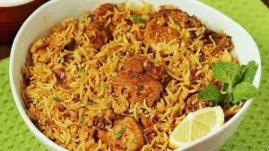

BIRYANI

DESCRIPTION
Biryani is a mixed rice dish originating among the Muslims of the Indian subcontinent.It is made with Indian spices, rice, and meat usually that of chicken, goat, lamb, prawn, fish, and sometimes, in addition, eggs or vegetables such as potatoes in certain regional varieties.
Its name is derived from a Persian word 'beriyan" meaning to fry or roast.
INGREDIENTS
- Chicken
- Rice
- Onion
- Tomatoes
- Garlic
- Masala
- Curd
STEPS
- Marinate the chicken using masala and curd
- Wash the rice and let it boil in a pot and close the it with a lid
- Take a pan and put oil on it and keep it in stove with medium heat
- Put your onions in the pan after cutting it
- After the onions get a brown texture remove them
- Put your marinated chicken in the pan and fry it
- Take out the rice after it is boiled 90 percent
- After the chicken is cooked take it out
- Take a pot and keep it on the stove
- Keep chicken at the bottom and cover it with rice
- Follow the previous steps untill both chicken are rice are completely filled
- Cover the pot and after some time enjoy your biryani